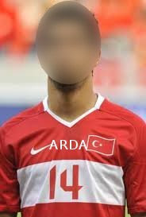

Fotoğraflar
Şike iddianamesini takip eden sürec hızla devam ediyor, biz de blog'umuza ulaşan bilgileri paylaşıyoruz. En son ele geçirdiğimiz fotoğraf "10 Numara" olarak bilinen Alex de Souza'yı net olarak Fenerbahçe Cumhuriyeti'yle bağlantılı bir şekilde gösteriyor. De Souza'nın Cumhuriyet eşbaşkanı ile verdigi pozdaki mutluluk görüntüsü gözlerden kaçmıyor. Bir diğer şüpheli örgütte "14 Numara" olarak bilinen sağda resmi görülen şahıs; fotoğrafta bu kişinin yüzü bulandırıldıgı için kimliği tespit edilemedi, fakat şüphelinin "halklar" gibi kelimeler kullanarak bölücü yorumlar yaptığı ve propaganda, provoke amaçlı sözler sarfettigi belirtiliyor. Şüphelinin İspanya'ya kaçtığı söylentiler arasında, ve kırmızı bülten ile aranıyor.
